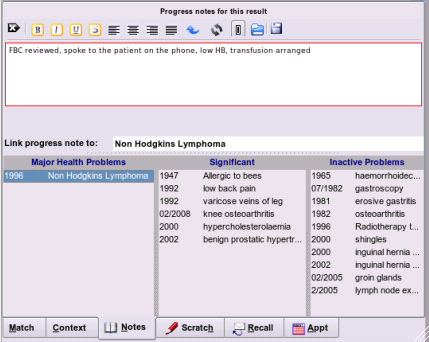

Adding a Progress Note
Adding progress note or linking result to an existing health issue.

Selecting the 'Notes' tab will allow you either add a general progress note to the patient's file, or, if you select one of the problems from the list, link this progress note to that specific problem